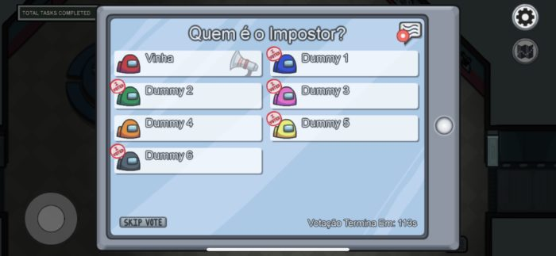

<!DOCTYPE html>
<html lang="en">
<head>
    <meta charset="UTF-8">
    <meta http-equiv="X-UA-Compatible" content="IE=edge">
    <meta name="viewport" content="width=device-width, initial-scale=1.0">
    <link rel="stylesheet" href="N.css">
    <title>O que é AmongUs?</title>
</head>
<body>
    
</body>
</html>
</head>
<body>

    <nav>
        <h1> Amogu tutorial</h1>
    </nav><br><br>
<br><br>

<h2> Como jogar?</h2>
<p><b>Jogabilidade: </b>
    Para jogar Among Us é necessário entender que existem dois tipos de papeis a serem interpretados e saber como se comportar em cada um deles.

    São eles:
    
    Como ser tripulante no Among Us: precisa sobreviver até o fim da partida, precisa resolver problemas e tarefas, precisa acusar o impostor corretamente
    Como ser impostor no Among Us: precisa matar todos os tripulantes, precisa sabotar locais, precisa escapar de acusações
    Os papéis, porém, são secretos. Eles são revelados no início de cada partida e apenas o próprio jogador sabe o seu papel. No caso de ter mais de um impostor, todos eles são revelados entre si, mas apenas entre si.
</p>
<p><b>Regras: </b>
    Durante a partida, o impostor pode matar tripulantes. O ideal é que faça isso sem que seja visto. Caso um tripulante encontre um corpo, é preciso informar aos outros começando uma reunião.
    A reunião ocorre dentro do próprio game, com um chat localizado no canto superior direito da tela. Ali todos trocarão acusações e opiniões sobre quem é o impostor dentro do grupo. Ao fim, cada participante tem a oportunidade de votar em um suspeito ou pular a votação.</p>

<br>
<p>
    Se um participante recebe a maioria dos votos, ele é expulso e está fora da partida. Se ele era um tripulante, ele se torna um fantasma. Se era o impostor, os tripulantes vencem.
    Depois de ser morto ou expulso injustamente do grupo o jogador ainda, ainda pode participar como fantasma, mas não interage mais com o grupo durante as conversas e só pode realizar ações limitadas.
</p>
<a href="A.html"></a> 

</body>
</html>